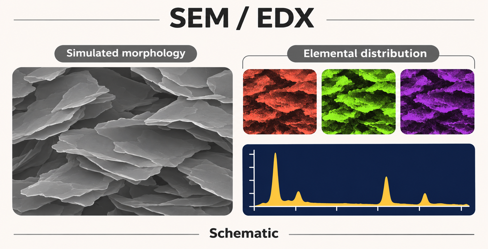
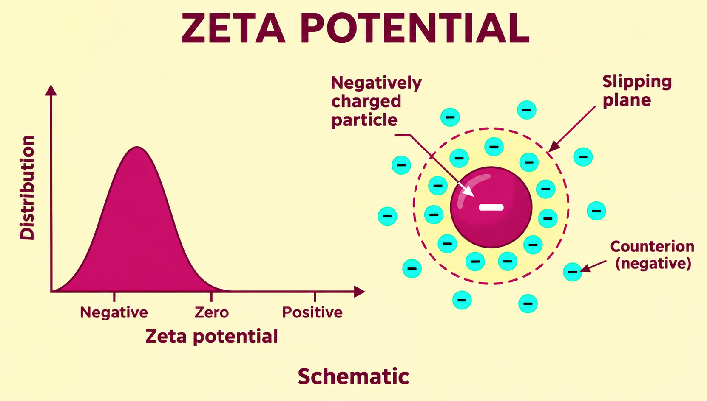

Descriptor
Extraction
I extract interpretable variables from characterization measurements to describe material structure, surface chemistry, accessible interfaces, and dispersion.
The schematics introduce each measurement and the meaning of its descriptors. Baseline treatment, fitting, integration, and physical transformations connect the experimental signal with the modelling framework.

X-ray Diffraction
Diffraction-profile modelling separates peak position, broadening, and area to characterize basal spacing and apparent stacking coherence.
- Basal spacing, d
- Interplanar distance obtained from Bragg's law. Tracks spacing changes between corresponding reflections.
- Peak width, β
- Full width at half maximum. Describes broadening from coherence, strain, and instrumental contributions.
- Apparent Lc
- A Scherrer-type stacking-coherence estimate. Provides a comparative structural descriptor, rather than a direct flake-thickness measurement.
- Area / parent index
- Integrated intensity measures for selected regions. Track diffraction features without directly determining a residual-phase fraction.

XPS
Survey quantification describes surface composition. High-resolution envelope fitting examines relative contributions from selected chemical environments.
- Elemental ratios
- Quantified atomic-fraction ratios, including F/Ti where available. Describe relative surface composition.
- Binding energy
- Position of a fitted spectral contribution. Supports chemical-environment interpretation with calibration and assignment controls.
- Component fraction
- A component's share of the fitted envelope area. Compares modelled chemical contributions within that region.
- TiOₓ-like fraction
- A model-dependent contribution associated with selected oxidized titanium environments.

Raman Spectroscopy
Corresponding vibrational features are fitted to quantify frequency displacement, broadening, and relative spectral contributions.
- Peak shift, Δω
- Frequency change relative to a defined reference. Tracks changes in the selected vibrational environment.
- Linewidth, Γ
- Width of a fitted vibrational feature. Describes broadening that can reflect disorder and other mode-dependent effects.
- Integrated area
- Signal beneath a fitted feature. Supports controlled comparisons of spectral contributions.
- Normalized shift
- Rescaled selected Raman shift. Supplies the vibrational variable used in the composite descriptor framework.

FTIR
Transmittance bands visualize infrared absorption. For descriptor extraction, corrected absorbance provides defined band areas and comparative spectral ratios.
- Band position
- Wavenumber of a selected absorption feature. Helps identify and compare vibrational regions.
- Band areas, B1–B4
- Integrated corrected absorbance over defined windows. Quantifies each selected spectral contribution.
- B2 area fraction
- Relative contribution of the termination-sensitive region. Provides an interface-sensitive descriptor.
- Band-area ratios
- B2/B1, B3/B1, and B4/B1 compare termination-, adsorbate-, and hydroxyl-sensitive regions with the lattice-related window.

BET & Gas Sorption
Gas-sorption analysis describes accessible surface area and pore geometry. Derived variables provide inputs for interface and effective-transport models.
- Surface area, SBET
- Gas-accessible area per unit mass. Describes the interface available to the adsorptive probe.
- Pore volume, Vp
- Sorption-derived pore-space measure. Describes accessible pore capacity under the analysis assumptions.
- Pore diameter, Dp
- Operational pore-size descriptor. The approximation 4Vp/SBET connects pore volume and area under a defined geometric treatment.
- Interface area, av
- Surface area multiplied by an assumed bulk density. Provides a volumetric interface term for transport modelling.

SEM / EDX
Morphology and elemental distribution provide complementary spatial context for structural and chemical characterization.
- Morphology
- Visible flake, aggregate, and surface features. Contextualizes material assembly and structural changes.
- Image-based size
- Dimensions measured from calibrated images. Describe sampled projected features when quantitative image analysis is performed.
- EDX composition
- Quantified atomic or mass fractions. Supports composition comparisons within instrumental limits.
- Elemental distribution
- Spatial patterns in elemental maps. Supports assessment of heterogeneity and co-location.

Zeta Potential & DLS
Electrokinetic magnitude and hydrodynamic size provide complementary operational descriptions of particle dispersions.
- Zeta potential, ζ
- Electrokinetic potential associated with the slipping plane. Describes the interface under specified measurement conditions.
- Magnitude, |ζ|
- Charge-related dispersion variable. Supports comparisons of electrostatic contributions to dispersion behavior.
- DLS size, Dh
- Operational hydrodynamic diameter. Can include aggregates and is not a direct sheet-width measure.
- Dispersion score, S
- Combines normalized |ζ| with inverted normalized log₁₀(Dh). Compares dispersion variables within the study's material set.
From measurement to model input
The descriptor table distinguishes measured inputs, fitted parameters, derived quantities, and composite scores. Screening considers comparability, missing values, redundancy, acquisition sensitivity, and dependence on assumed physical parameters.
Explore physics-guided descriptor modelling →